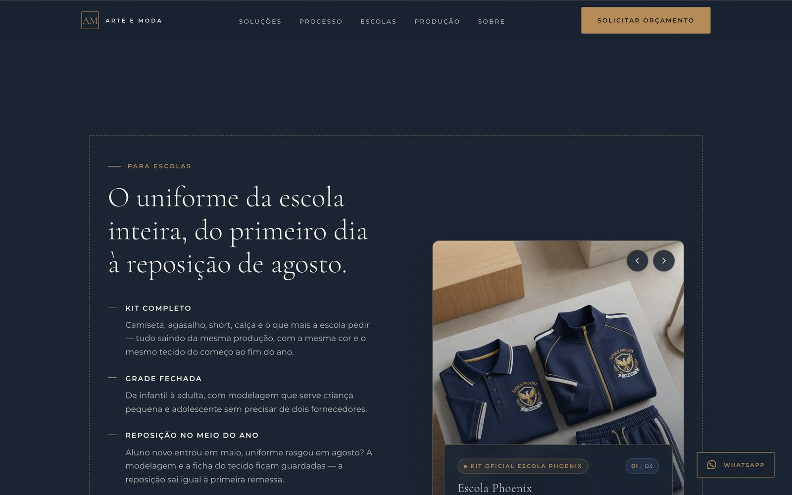
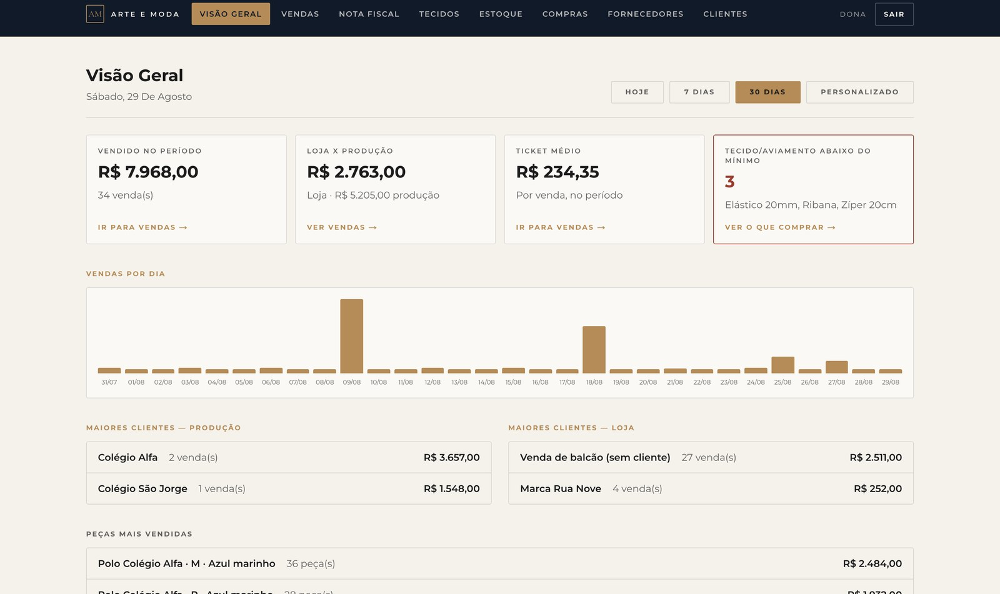
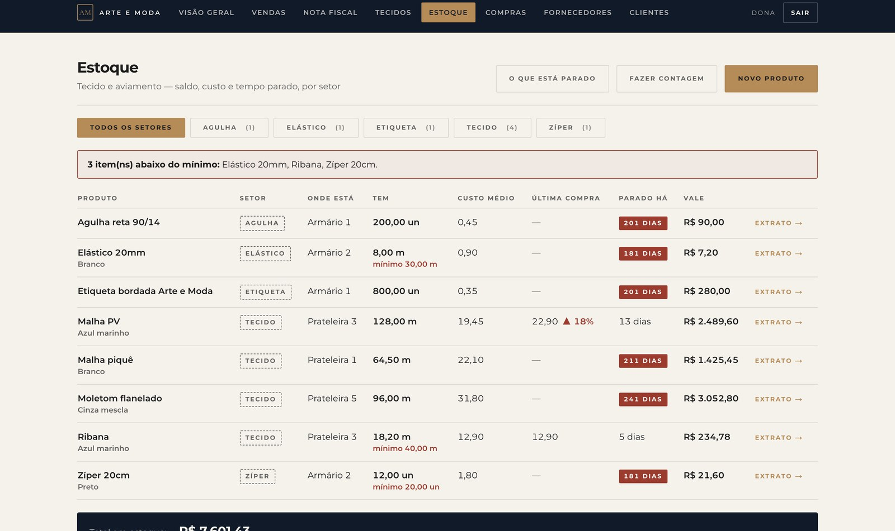
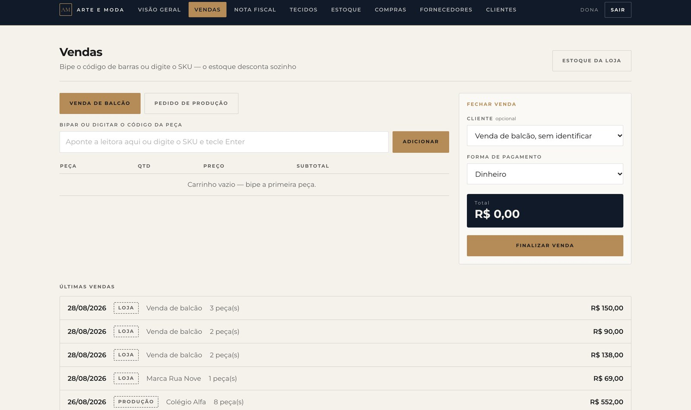
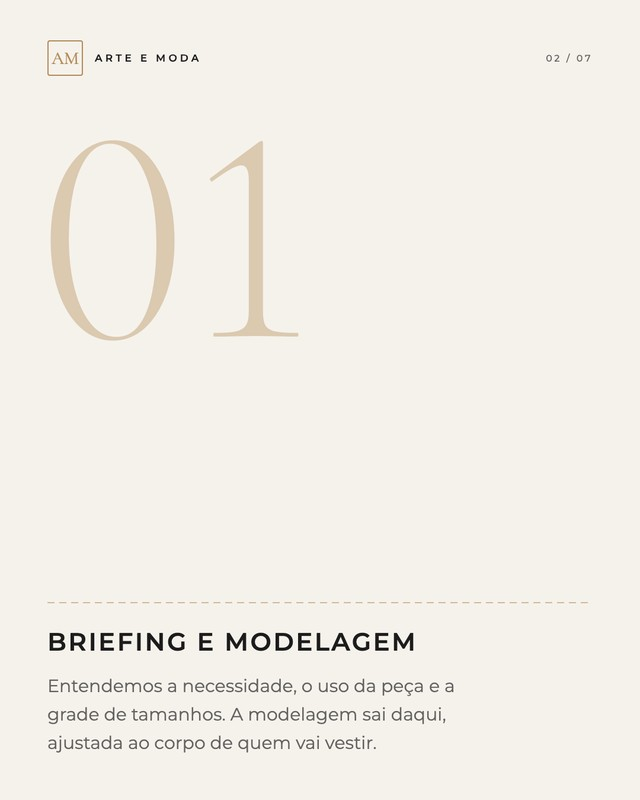
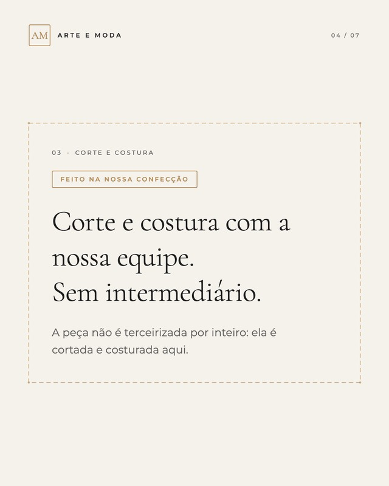

11Aplicação no siteBrandbook 2026
O site é escuro-dominante: azul marinho com trama de sarja,
Cormorant nos títulos grandes, dourado só no botão principal e no fio.



Início · computador
Como produzimos · Para escolas
Este guia reúne a identidade visual da Arte e Moda — logotipo, monograma, cores, tipografia e elementos — e as regras que mantêm tudo coerente, do site ao gerenciador, da etiqueta ao post.
Todos os direitos reservadosLettering
ARTE E MODA em Montserrat SemiBold, caixa alta, com +30% de espaço entre as letras. É o espaçamento largo que dá o ar de etiqueta de alfaiataria.
Assinatura
“Uniformes · Private Label · Confecção Premium” em Montserrat SemiBold, caixa alta, +22%, em dourado. Acompanha o logotipo em materiais institucionais.
Regra
Use sempre os arquivos da pasta identidade/logo/. Não redigite, não distorça e não altere o espaço entre as letras.
O monograma é o AM da marca em Cormorant Garamond, dentro de um quadrado com fio dourado. Funciona sozinho como ícone do gerenciador, foto de perfil, etiqueta e assinatura em peças pequenas.
Nenhum texto, imagem ou borda entra no espaço ao redor da assinatura. A medida x é a altura do monograma e cresce junto com o logo.
Assinatura horizontal
Tela: 145 px de largura (o tamanho pequeno do site) · impresso: 35 mm
Abaixo disso, use só o monograma — mínimo de 28 px na tela e 8 mm no impresso.
TODO: confirmar com o parceiro de bordado o tamanho mínimo do monograma bordado.
A largura de cada cor mostra o quanto ela aparece na marca:
o azul marinho e o creme dominam, o dourado entra só como acento.
Base. Fundo do site, topo do gerenciador, etiqueta e tag.
HEX #15263D
RGB 21 38 61
CMYK 66 38 0 76
Fundo claro. Base do gerenciador e das páginas claras.
HEX #F5F2EC
RGB 245 242 236
CMYK 0 1 4 4
Texto forte.
HEX #1C1C1C
RGB 28 28 28
CMYK 0 0 0 89
Só linha e rótulo. Nunca em texto corrido.
HEX #707070
RGB 112 112 112
CMYK 0 0 0 56
Acento. CTA e monograma.
HEX #B58B57
RGB 181 139 87
CMYK 0 23 52 29
CMYK aproximado, convertido do HEX. Peça prova de cor à gráfica antes de imprimir.
Aa Bb Cc Dd Ee Ff Gg Hh Ii Jj Kk Ll Mm
Nn Oo Pp Qq Rr Ss Tt Uu Vv Ww Xx Yy Zz
0123456789 R$ % @ & ! ?
Caixa alta sempre com espaçamento largo.
Texto secundário usa a própria paleta com transparência — preto a 68% no claro, creme a 72% no escuro. Nunca o cinza #707070.
Fonte da interface: títulos de seção, rótulos, botões e textos do site, do gerenciador e de todos os materiais.
Aa Bb Cc Dd Ee Ff Gg Hh Ii Jj Kk Ll Mm
Nn Oo Pp Qq Rr Ss Tt Uu Vv Ww Xx Yy Zz
0 1 2 3 4 5 6 7 8 9
Só em tamanho grande.
Light a partir de 40 px. Entre 28 e 40 px o peso sobe para Regular. Abaixo de 28 px não se usa a serifa — volta a Montserrat.
Fonte display: títulos grandes, números, citações e o monograma.
Pesponto
Traço 6 / intervalo 4, 1 px, dourado. Acompanha emenda entre painéis e perímetro de bloco aplicado — nunca solto no meio da tela.
Trama de sarja
Diagonal a 45° a cada 3 px, creme a 4%. É a textura dos fundos escuros, no lugar de gradiente colorido.
Risco de giz
Traço dourado de 24 px antes de todo sobretítulo, como a marca do alfaiate no tecido.
Moldura
Fio dourado a 28% contornando a capa e o topo do site: a borda da etiqueta.
Escolar · Empresarial · Private label
Botões
Dourado cheio só no botão principal, um por tela. Link de ação: Extrato →
Selos de status
Cartão de alerta
Abaixo do mínimo
3
itens de tecido e aviamento
Ver o que comprar →
O que exige ação lidera a tela.
Cores de status
Campos
Nome do produto
WhatsApp do cliente
Informe um WhatsApp com DDD.
O erro diz o que fazer, nunca “campo inválido”.
Tabela
| Produto | Setor | Tem | Custo médio | Parado há |
|---|---|---|---|---|
| Malha PVAzul marinho | Tecido | 128,00 m | 19,45 | 13 dias |
| Elástico 20 mmBranco | Elástico | 8,00 mmínimo 30,00 m | 0,90 | 181 dias |
Código de máquina
7891000000029
IBM Plex Mono, só em SKU, nº de ordem e código de barras.
Cantos e toque
2 a 3 px · alvo de 44 px
Usado em pé, no tablet, na fábrica.
Valores ilustrativos.
O site é escuro-dominante: azul marinho com trama de sarja,
Cormorant nos títulos grandes, dourado só no botão principal e no fio.

Início · computador
Como produzimos · Para escolas
No sistema a inversão é deliberada: fundo creme e azul só no topo,
porque ele é usado em pé, no chão de fábrica, sob luz forte. Telas com dados de exemplo.



Visão geral
Estoque · Vendas
Carrossel 4:5 que alterna azul marinho e creme.
A capa abre no azul; o fechamento traz o monograma e o pedido de orçamento.



Ordem: capa azul · etapas alternam azul e creme · fechamento com CTA
Margem: 80 px nas laterais e moldura a 36 px, no arquivo de 1080 × 1350
Texto: só o que está confirmado
Etiqueta tecida
Uniformes e peças
Tag e cartão
Papelaria
Não distorcer nem esticar
Não usar cores fora da paleta
Não aplicar sombra ou efeitos
Não usar sobre fundo poluído
Não usar dourado como fundo
Não redigitar em outra fonte